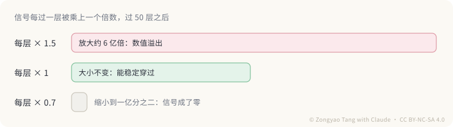

线索是：训练就是让损失变小，那损失函数是怎么来的 → 知道了要减小什么，怎样一步步地减，这是优化器的事 → 深层网络能不能开始训练，取决于初始化 → 损失降下去了，模型是不是真的学会了，要看它在没见过的数据上的表现。这四件事回答了“模型为什么能学会”的四个层面。
第 1 部分 · 深度学习原理1.2 损失、优化与泛化
这一单元回答模型为什么能学会？学得快慢由什么决定？为什么会学过头？
承接 1.1：你知道梯度怎么算了，这一单元讲拿梯度去做什么。
讲解
1损失函数不是拍脑袋定的：它来自最大似然
让模型输出一个概率分布的参数，再问“哪组参数让观测到的数据最可能出现”，取负对数就得到损失。假设输出服从高斯分布，得到的是均方误差；假设是类别分布，得到的就是交叉熵。
换一个角度看模型的输出。 不把模型看成“直接给出答案”，而是看成“给出一个概率分布”：输入一段文字，模型输出词表里每个词作为下一个词的概率。
什么样的模型是好的。 训练数据里，这段文字后面实际跟着的是某个词。好的模型应该给这个词高的概率。对整个训练集：把模型给每个“正确答案”的概率全部乘起来，这个乘积越大越好。这叫最大似然：调整参数，让观测到的数据在模型看来最有可能出现。
从乘积到求和。 很多个小于 1 的数相乘，结果小得没法用浮点数表示。取对数，乘积变成求和，大小关系不变。再加一个负号，把“最大化”变成“最小化”。于是得到：
损失 = −（每个样本上，模型给正确答案的概率的对数）的平均
这就是交叉熵损失。它不是谁规定的，而是“让数据最可能”这个要求的直接结果。
几个可以检验的性质。
- 模型给正确答案的概率是 1，损失是 0。
- 概率越小，损失越大；概率趋近 0 时损失趋向无穷。所以模型“很有把握地答错”会受到很重的惩罚。
- 模型完全在瞎猜（V 个选项各 1/V），损失是 ln V。1.3 用这个数来检查训练的起点。
换一种假设，就换一种损失。 如果任务是预测一个连续的数值（比如温度），可以假设“真实值 = 模型的预测 + 一个服从高斯分布的误差”。对这个假设做同样的推导（写出概率、取负对数），得到的恰好是预测值和真实值之差的平方：均方误差。
所以选损失函数，实际上是在回答“模型的输出代表什么样的分布”。分类用交叉熵，回归用均方误差，背后是同一个原则。UDL（《Understanding Deep Learning》）第 5 章把这个推导做成了一个通用的“配方”。
从 logits 到概率。 模型最后一层输出的是 V 个任意的实数（叫 logits）。softmax 把它们变成概率：先取指数（保证为正），再除以总和（保证加起来是 1）。实际代码里 softmax 和取对数是合在一起算的，为的是数值稳定（4.4 讲过其中的技巧）。4.2 提到的“线性层加交叉熵”的融合 kernel，融合的就是这最后几步。
打个比方像侦探推理：在所有可能的解释里，挑最能解释现场证据的那一个。
所以分类用交叉熵不是习惯，而是因为模型输出的是概率；换了对输出的分布假设，就换了损失函数。
- 有了损失，训练就是不断调整参数让它变小。怎么调，是优化器的事。
2Adam = 动量 + 每个参数各自的步长
随机梯度下降的每一步都带噪声。动量把最近几步的方向做平均，不被小的颠簸带偏；Adam 再用每个参数梯度大小的滑动平均来缩放步长：梯度一直很大的方向迈小步，很小的方向迈大步。
随机梯度下降（SGD）。 每一步：取一个 batch，算出梯度，参数 ← 参数 − 学习率 × 梯度。“随机”指的是每个 batch 是随机抽的，所以梯度带着噪声：它大体指向下坡，但每一步都有偏差。
问题一：方向在抖。 损失的地形常常像一条狭长的山谷：横向很陡，纵向很缓。梯度主要指向陡的横向，于是参数在山谷两壁之间来回弹，沿着谷底真正该走的方向进展很慢。
动量。 不直接用当前的梯度，而是用“最近若干步梯度的滑动平均”。来回弹的横向分量一正一负，平均后互相抵消；一直指向同一边的纵向分量，平均后保留下来，甚至越积越大。像一个有惯性的球滚下山谷：小的颠簸改变不了它的方向。实现上，为每个参数多存一个数：它的梯度的滑动平均（一阶矩）。
问题二：不同的参数需要不同的步长。 有的参数梯度一直很大，有的一直很小（可能差几个数量级）。用同一个学习率，对前者太大，对后者太小。
自适应步长。 再为每个参数存一个数：它的梯度平方的滑动平均（二阶矩），反映这个参数的梯度通常有多大。更新时，把步长除以这个量的平方根。于是梯度一贯很大的参数步子被缩小，梯度一贯很小的参数步子被放大，所有参数实际移动的幅度变得差不多。
Adam = 两者合起来。 每一步对每个参数：更新它的一阶矩和二阶矩；参数 ← 参数 − 学习率 × 一阶矩 ÷ √二阶矩。（还有一个对头几步的修正，因为滑动平均刚开始时不准；1.3 讲的预热和这个问题有关。）
好处。 对学习率不那么敏感，不同的层不需要分别调，收敛通常比 SGD 快。训练 Transformer 几乎都用它的变体 AdamW（1.3）。
代价是状态。 每个参数除了自己，还要存一阶矩和二阶矩，各和参数一样大。于是：
- 显存：2.1 的五笔账里，“优化器状态”是参数本身的两倍。7.2 算过，混合精度下每个参数的 16 字节里有 12 字节在优化器这一侧。ZeRO 最先切分的就是它。
- 计算：一次更新是十来步逐元素运算，作用在每一个参数上。2.6 讲的 fused 优化器把这十来步合成了一个 kernel。
- 检查点：恢复训练时，这两份状态也必须存下来，否则优化器要从头积累统计量（7.4）。
打个比方下山时，动量像带着惯性滚动的球，不会被小坑卡住；Adam 还会在陡坡上小心挪步，在平地上大步走。
所以 Adam 对学习率没那么敏感、收敛快，但每个参数要多存两份状态（一阶矩和二阶矩）。到了 7.2 你会看到，这两份状态是大模型训练显存的大头。
- 优化器负责“怎么走”。但如果起点选得不好，深层网络可能根本迈不出第一步。
3初始化决定信号能不能穿过几十层
前向时每一层都会把激活值的方差放大或缩小一个倍数，反向时梯度也一样。几十层乘下来，不是爆炸就是消失。He 初始化按每层输入的个数选权重的方差（ReLU 网络用 2/输入数），让方差逐层保持稳定。
问题：方差逐层相乘。 设每一层的权重都是从同一个分布里随机取的。信号每经过一层，它的典型大小（方差）会被乘上一个倍数，这个倍数取决于权重的方差和这一层的宽度。
- 倍数略大于 1，比如 1.5：过 50 层之后，信号被放大了 1.5 的 50 次方，约 6 亿倍。数值溢出。
- 倍数略小于 1，比如 0.7：过 50 层之后缩小到原来的一亿分之二。信号基本成了零。
只有倍数恰好是 1 时，信号才能稳定地穿过很多层。深度把一个小的偏差放大成了灾难。

同样是 50 层，每层的倍数差一点，结果差出十几个数量级 反向时也一样。 梯度从最后一层往回传，每经过一层同样被乘上一个倍数。倍数小于 1，传到前面的层时已经小到没有作用，这些层学不动（梯度消失）；倍数大于 1，梯度越传越大，一更新参数就飞了（梯度爆炸）。
He 初始化。 做法是把那个倍数算出来，再选权重的方差让它等于 1。对 ReLU 网络：一层有 n 个输入，每个权重的方差取 2/n。直观上：n 个输入各乘一个权重再相加，和的方差是 n × 权重的方差 × 输入的方差；ReLU 把一半的输出砍成了零，方差又少一半；所以权重的方差取 2/n 时，输出和输入的方差正好相等。
层越宽，每个权重就要越小。这是为什么初始化的代码里总能看到“除以输入个数的平方根”。
初始化只管开头。 它保证训练开始时信号能通。训练过程中权重在变，方差的平衡会被打破。所以深层网络还需要两样东西来持续地维持稳定（1.4）：
- 残差连接：给信号和梯度一条不经过变换的直通路径。
- 归一化层：每一层都把数值的范围重新拉回标准的大小。
有了这两样，现代的网络对初始化已经不像早期那样敏感。但原理没有变：深度网络里的任何量，只要每一层乘一个不是 1 的倍数，就会指数地放大或缩小。这句话也是理解混合精度下溢（2.6）和梯度裁剪（1.3）的钥匙。
打个比方像传话游戏：每个人把声音放大一点或压低一点，传过几十个人之后，要么震耳欲聋，要么什么都听不见。
所以梯度消失和梯度爆炸不是玄学，而是方差逐层相乘的结果；合适的初始化，加上残差连接和归一化（1.4），才让深层网络能训练。
后面会用到 残差连接：给信号和梯度修一条直通车道- 损失在下降，说明模型在拟合训练数据。但这不是我们最终要的。
4训练误差低不等于学会了：要看没见过的数据
模型可能把训练集记住，却没有学到规律。测试误差来自三部分：数据本身的噪声、模型太简单（偏差）、模型对训练样本过于敏感（方差）。现代大模型还会出现“双下降”：模型继续变大，测试误差反而又下降。
训练的目的。 我们要的不是模型在训练数据上表现好（把训练数据存下来查表就能做到），而是在没见过的新数据上表现好。这叫泛化。
所以要留出数据。 把数据分成训练集和验证集（有时再加一个测试集）。只用训练集更新参数；定期在验证集上算损失，看模型在“没见过的数据”上的表现。1.3 讲了怎样读这两条曲线。
测试误差的三个来源。
- *噪声。* 数据本身的不确定性。同一段话后面可以接不同的词，任何模型都不可能次次猜对。这部分误差无法消除。
- *偏差。* 模型太简单，表达不了真实的规律。用一条直线去拟合一条曲线，再怎么训练也有差距。表现是训练损失和验证损失都高（欠拟合）。
- *方差。* 模型对训练数据的具体样本过于敏感：换一批训练数据，学到的函数就大不一样。它把训练数据里的偶然细节也当成了规律。表现是训练损失很低，验证损失高得多（过拟合）。
传统的看法：两者此消彼长。 模型越大，偏差越小，但方差越大。于是存在一个最合适的大小，过大过小都不好。
现代的发现：双下降。 把模型继续加大，大到足以完全记住训练数据之后，测试误差并没有一路变差，而是在升到一个峰值后再次下降，最后比那个“最合适的大小”时还低。今天的大模型都处在这个区域：参数量远多于“记住训练数据”所需要的。
为什么会这样，还没有完全的理论解释。一个常见的说法是：能完全拟合训练数据的函数有很多个，模型越大，可选的越多；而训练算法（从小的初始值出发、用梯度下降）倾向于在其中找到比较平滑的那些，平滑的函数在新数据上表现也好。UDL 第 8 章有这个现象的实验图。
对实践的意义。
- “模型大了就会过拟合”不是定律。数据足够、训练得当时，更大的模型通常更好。这是大家不断把模型做大的经验基础，也是这门课后面所有系统问题的来源：模型大了，才需要多卡、需要分片、需要高速互联。
- 但验证集不能省。无论处在曲线的哪一段，只有验证集上的表现能告诉你模型是不是真的在变好。
打个比方像背题库考试：题库背得滚瓜烂熟，换一套题就露馅。
所以训练时一定要看验证集曲线：训练损失在降、验证损失在升，就是过拟合。正则化（weight decay、dropout）和更多的数据，都是在控制方差。
串起来
损失函数来自最大似然：让观测到的数据在模型下最可能。Adam 用动量平滑方向，再给每个参数各自的步长，代价是每个参数多存两份状态。初始化决定信号和梯度能不能穿过很多层。泛化要看验证集：训练损失低不等于学会了。
考考自己
不看讲解，用自己的话讲一遍。
- 交叉熵损失是怎么来的？为什么说损失函数取决于“对输出分布的假设”？
- Adam 相对于普通的随机梯度下降，多做了哪两件事？它为什么要为每个参数多存两份状态？
- 为什么深层网络的初始化不能随便取？He 初始化是按什么原则确定权重大小的？
- 为什么训练损失低不代表模型学会了？测试误差由哪几部分组成？
术语
- loss function
- 损失函数
- optimizer
- 优化器
- initialization
- 初始化
- overfitting
- 过拟合
- regularization
- 正则化